The Joker is a fictional supervillain created by Bill Finger, Bob Kane, and Jerry Robinson who first appeared in the debut issue of the comic book Batman (April 25, 1940) published by DC Comics. Credit for the Joker's creation is disputed; Kane and Robinson claimed responsibility for the Joker's design, while acknowledging Finger's writing contribution. Although the Joker was planned to be killed off during his initial appearance, he was spared by editorial intervention, allowing the character to endure as the archenemy of the superhero Batman.
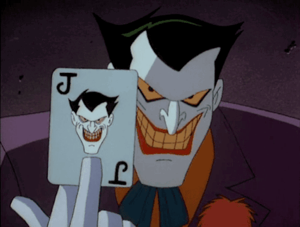
The Joker possesses no superhuman abilities, instead using his expertise in chemical engineering to develop poisonous or lethal concoctions, and thematic weaponry, including razor-tipped playing cards, deadly joy buzzers, and acid-spraying lapel flowers. Although the Joker sometimes works with other supervillains such as the Penguin and Two-Face, and groups like the Injustice Gang and Injustice League, these relationships often collapse due to the Joker's desire for unbridled chaos. The 1990s introduced a romantic interest for the Joker in his former psychiatrist, Harley Quinn, who becomes his villainous sidekick. Although his primary obsession is Batman, the Joker has also fought other heroes including Superman and Wonder Woman.
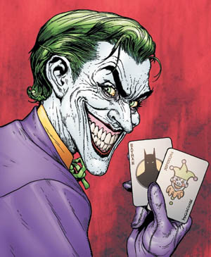
One of the most iconic characters in popular culture, the Joker has been listed among the greatest comic book villains and fictional characters ever created. The character's popularity has seen him appear on a variety of merchandise, such as clothing and collectable items, inspire real-world structures (such as theme park attractions), and be referenced in a number of media. The Joker has been adapted to serve as Batman's adversary in live-action, animated, and video game incarnations, including the 1960s Batman television series (played by Cesar Romero) and in film by Jack Nicholson in Batman (1989), Heath Ledger in The Dark Knight (2008), and Jared Leto in Suicide Squad (2016). Mark Hamill, Troy Baker, and others have provided the character's voice.
Harley Quinn
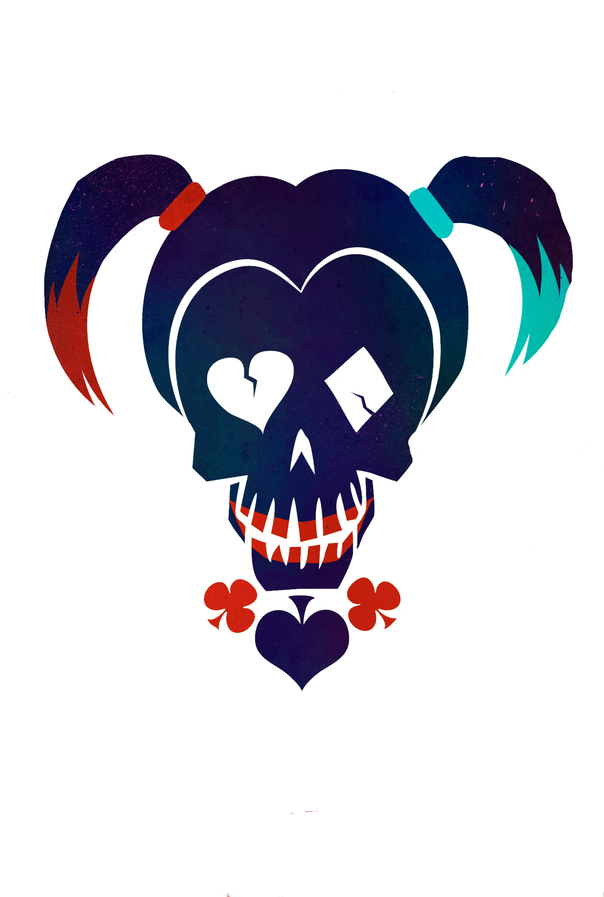
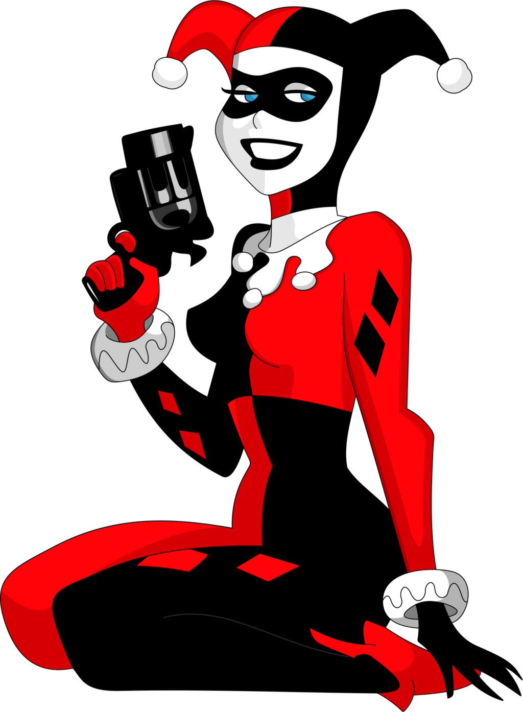
Dr. Harleen Frances Quinzel, also known as Harley Quinn.
Harley Quinn (Harleen Frances Quinzel) is a fictional supervillain appearing in American comic books published by DC Comics, commonly as an adversary of the superhero Batman and accomplice of the Joker. The character was created by Paul Dini and Bruce Timm, and first appeared in Batman: The Animated Series in September 1992. She later appeared in DC Comics' Batman comic books, with her first comic book appearance in The Batman Adventures #12 (Sept. 1993).
Harley Quinn is the Joker's frequent accomplice and lover, and she is also an ally of the supervillain Poison Ivy, from whom she gained an immunity to poisons and toxins. Harley Quinn is depicted as having a very pronounced New York accent. Her name is a play on the name "Harlequin", a character which originated in the commedia dell'arte.
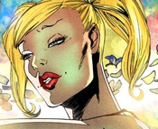
She was a psychiatric intern at Arkham Asylum. A model student, in addition to receiving high grades in college, she was also a dedicated gymnast, winning a scholarship to Gotham City University. While researching the lunatics at Arkham, she became fascinated with one particular inmate, Joker. Ambitiously volunteering to analyze him, she pleaded with the doctors at Arkham for three months before she could treat him. After he gained her sympathy during their sessions, he seduced her, causing her to fall madly in love with him. 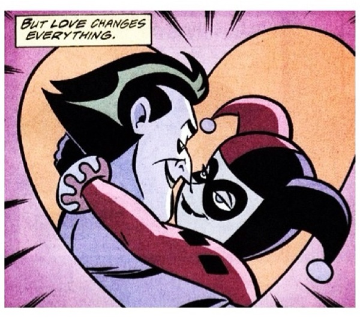After helping him escape from the asylum more than once, Harleen was suspected by the authorities, who revoked her license and placed her in her own cell. During an earthquake in Gotham City, she fled and became Harley Quinn, the sidekick of the Clown Prince of Crime himself.
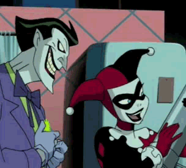
Quinn's relationship with the Joker is one of the most complex and twisted love affairs in comics: as with all people, the Joker is abusive and manipulative towards Harley, but, just as often, there's evidence of camaraderie, playfulness, and genuine affection towards her. She's the only person who's managed to become intimate on such a long term basis with the Joker, who, in turn, displays occasional moments of confusion and discomfort which results in attempts to kill her.
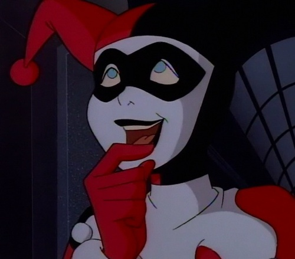
Bane
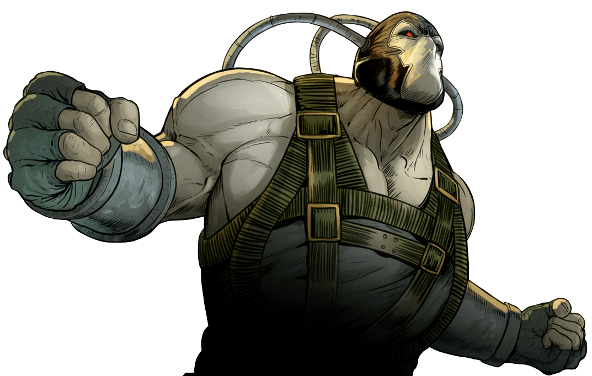
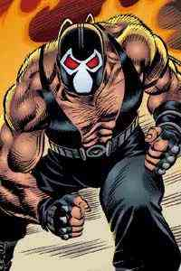
Originally intended as a "dark mirror" of the highly disciplined and multi-skilled pulp hero Doc Savage, Bane spends his childhood in the hellish prison of Pena Duro on the corrupt South American island nation of Santa Prisca. He develops super strength through a forced experiment involving the drug Venom. Although his dependency on Venom is an immense weakness, Bane has been one of Batman's most intelligent and physically powerful foes. He is best known for breaking Batman's back in the "Knightfall " story arc.
Although primarily a villain, Bane is a complex character and has worked to take down drug lords. Despite their history, he has sometimes had Batman's financial backing and direct assistance.
Bane ultimately establishes himself as the "king" of Peña Duro prison. The prison's controllers take note and, eventually, force him to become a test subject for a mysterious drug known as Venom, which had killed all other subjects. It nearly kills him at first, but he survives and finds its effects enhance his physical strength, although he needs to take it every 12 hours (via a system of cables pumped directly into his brain) or he would suffer debilitating side-effects. His ambition turns to destroying Batman, whom he had heard tales of while serving his sentence. He is fascinated with Gotham City, as, like the prison, it is a place where fear rules: in this case, fear of Batman. Bane is convinced that the demonic bat that haunted his dreams since childhood is a representation of the Batman.
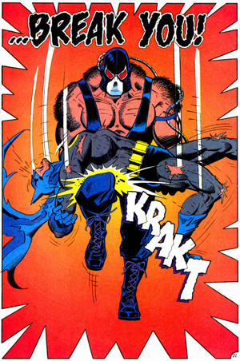
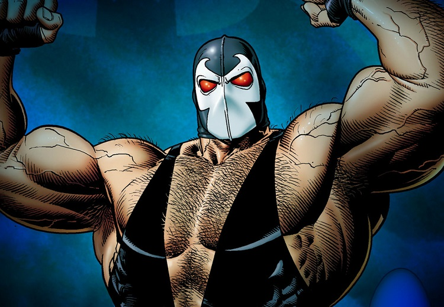
Scarecrow
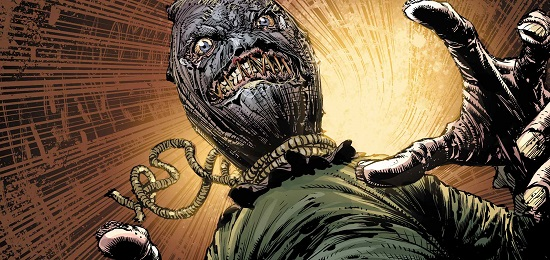
As the Guardian of Gotham, Batman strikes fear into the hearts of his enemies—utilizing terror itself as a weapon in his crusade against the villains that plague his city. However, there is another denizen of Gotham that knows how to use fear to his advantage. One that turns Batman's own weapon against him and revels in terror and dread: the Scarecrow.
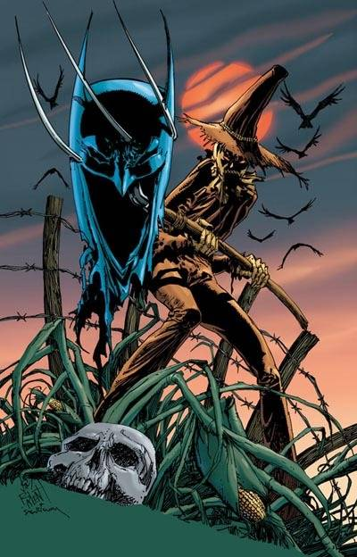
The Scarecrow is an overly-obessive and deranged ex-professor of psychology who uses a variety of drugs and psychological tactics to use the fears and phobias of his adversaries. He does not commit his crimes for wealth, but rather as a form of "research" to further study the effects of fear on humans (later, he does it to satisfy his own psychopathic desires), making the innocent citizens of Gotham his unwilling guinea pigs.